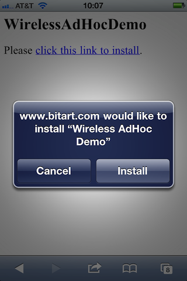
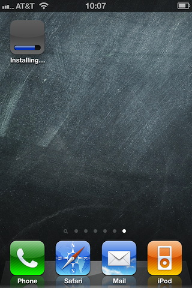
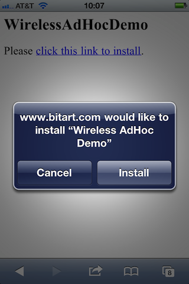
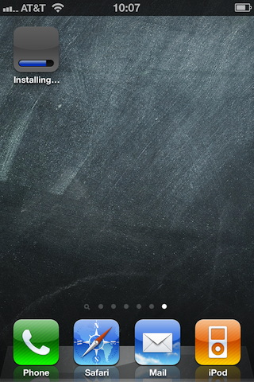
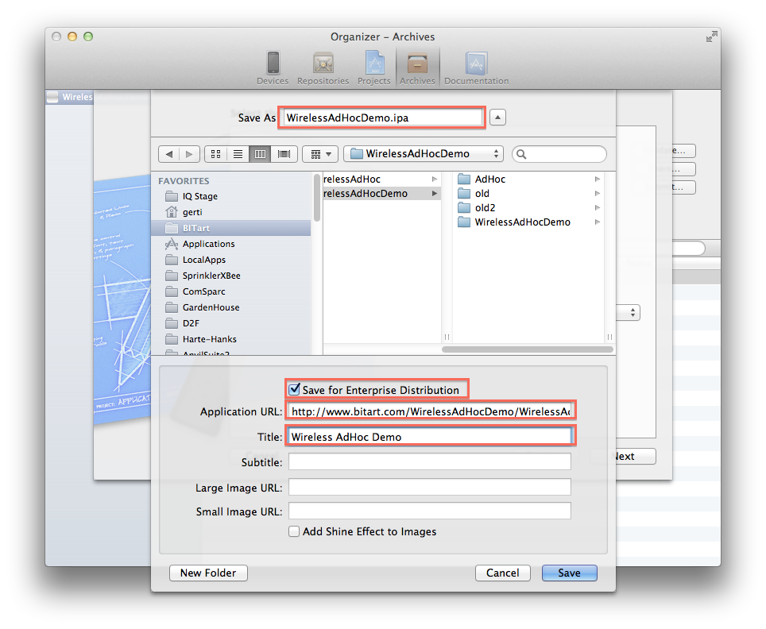

NOTE: this is a companion article to the adHocGenerate script available at https://github.com/gknops/adHocGenerate
Wireless AdHoc Distribution
Wireless AdHoc Distribution allows your testers to install your iOS application by simply clicking a link on a web page or in an email. There is no longer a need for your testers to drag any packages to iTunes, connect their device, sync etc.
Note that this does not allow you to distribute your app to anyone. You still need your testers device UDIDs and add those to a mobileprovision.
The below procedure assume you use Xcode4 and have a web server available to upload your application to. Otherwise you may want to look into services offering support for iOS beta testing such as testflightapp.com (I have no experiences with them, so this is not an endorsement).
How it looks like to the user
 



How it works
Three components are required to make this work:
index.html
WirelessAdHocDemo.plist
WirelessAdHocDemo.ipaMagic Link
OK, not really anything magic about it, just a specially crafted URL. The link in the above sample page (index.html) looks like this (note that the newline after the semicolon in the first line was inserted for display here only, it should not be there):
<a href="itms-services://?action=download-manifest&
url=http://www.bitart.com/WirelessAdHocDemo/WirelessAdHocDemo.plist">
click this link to install
</a>You could also send this link in an email.
Manifest
You’ll notice how the above link references a file named WirelessAdHocDemo.plist. This is a manifest in property list format. It can be generated by Xcode or by some custom script and looks like this:
<?xml version="1.0" encoding="UTF-8"?>
<!DOCTYPE plist PUBLIC "-//Apple//DTD PLIST 1.0//EN" "http://www.apple.com/DTDs/PropertyList-1.0.dtd">
<plist version="1.0">
<dict>
<key>items</key>
<array>
<dict>
<key>assets</key>
<array>
<dict>
<key>kind</key>
<string>software-package</string>
<key>url</key>
<string>http://www.bitart.com/WirelessAdHocDemo/WirelessAdHocDemo.ipa</string>
</dict>
</array>
<key>metadata</key>
<dict>
<key>bundle-identifier</key>
<string>com.bitart.WirelessAdHocDemo</string>
<key>bundle-version</key>
<string>1.0</string>
<key>kind</key>
<string>software</string>
<key>title</key>
<string>Wireless AdHoc Demo</string>
</dict>
</dict>
</array>
</dict>
</plist>The keys in the above file that need to be modified for your app are:
- items.assets.[1].url
- items.assets.metadata.bundle-identifier
- items.assets.metadata.bundle-version
- items.assets.metadata.title
IPA
The WirelessAdHocDemo.ipa contains your application along with the embedded mobileprovision. Xcode creates this for you.
The Distribution Provisioning Profile
In any case you will need a Distribution Provisioning Profile. Go to the iOS Provisioning Portal, select Provisioning/Distibution and create an adHoc profile for your app. Remember to select the Ad Hoc Distribution Method, and include the Devices of your beta testers. Download the Distribution Provisioning Profile (it will have a .mobileprovision extension) and drag it onto iTunes.
HowTo: the manual way
Xcode4 actually provides a relatively easy way to produce the Manifest and the IPA (you will still have to create a web page with that Magic Link).
Start by selecting the scheme for your app, and select iOS Device in the scheme drop down. Now select Archive from the Product menu. In the Xcode default setting the Archive tab of the Organizer will appear. If not (and the archival process did not have any errors) select Organizer from the Window menu and select the Archive tab.
Select the Share button:

Select iOS App Store Package (.ipa) and from the drop down select your ad hoc mobileprovision. Click Next.

Your save panel may not include the extra fields shown above. Check the Save for Enterprise Distribution checkbox to bring those fields up. Using this option tells Xcode to also create the Manifest plist file for us.
Make sure to enter at least the name for your IPA, the Application URL and the Title, and of course selecting a folder for the files to be created.
Note that the Application URL must be an absolute URL indicating the eventual location of the IPA at your web server.
Finally click Save.
Inspect the folder you selected in the Save panel, it will contain:
Create an index.html file containing the Magic Link and add it to that folder, the upload the folder to your web site.
That’s it, contact your testers to download and test the app.
HowTo: the automated way
For the occasional test release the above method is perfectly fine. However if your testing will be a longer process, or if you generate frequent milestone releases to solicit feedback from your customer or testers, the above procedure will become bothersome.
Fortunately Xcode provides a way to use the command line to generate, sign and embed the mobileprovision from an archive (for details do a Google search for xcrun and PackageApplication).
This allows us to use a script to generate the IPA, Manifest and a web page containing the Magic Link. As an example we will use the adHocGenerate script available at github.
The script is controlled via environment variables and an optional template for the HTML page.
We will call this script from a Post Action of the Archive action, so that it is run every time you archive your product (optionally duplicate your Scheme first if you do want control over when the AdHoc distribution data is generated). Bring up the Scheme Editor, click the disclosure triangle before the Archive action, and click the + button. Select New Run Script Action from the drop down menu, and fill it in like in this example:

Here a template suitable for copy/paste:
AdHoc_TITLE="Tile_For_Your_App_Here"
AdHoc_IDENTITY="The_Name_Of_Your_Distribution_Identity"
AdHoc_PROVISONING_PROFILE="/See/Below/XXXXXXXX-XXXX-XXXX-XXXX-XXXXXXXXXXXX.mobileprovision"
AdHoc_DESTDIR="/Where/To/Store/Files"
AdHoc_IPA_URL="Absolute_URL_Of_IPA_On_Your_Web_Server"
mkdir -p $AdHoc_DESTDIR
export AdHoc_TITLE AdHoc_IDENTITY AdHoc_PROVISONING_PROFILE AdHoc_DESTDIR AdHoc_IPA_URL
# May need to include the path
adHocGenerateThe AdHoc_* variables to fill out are:
- AdHoc_TITLE
-
A title for your app (human readable)
- AdHoc_IDENTITY
-
This is the Identity Name of your developer profile used for distribution. You can find it in the Origanizer’s Devices tab, on the left select Developer Profile in the LIBRARY group.
- AdHoc_PROVISONING_PROFILE
-
The path of your AdHoc distribution profile. To find that select the Origanizer’s Devices tab, on the left select Provisioning Profiles in the LIBRARY group. Right- or Control-click on the correct Profile, and select Reveal Profile in Finder from the context menu. Tip: drag the file onto a Terminal window, the full path will appear and you can easily copy it.
- AdHoc_DESTDIR
-
A directory on your disk where to place the generated files.
- AdHoc_IPA_URL
-
The absolute URL the IPA file will have on your web server.
Finally depending on where you placed the adHocGenerate script you may need to include a path, See the adHocGenerate README file for more information. That file will also explain other optional variables and how to customize the web page that is generated.
Now any time you select Archive from the Product menu all files needed for wireless distribution will be generated automatically.
More automation: copy files to web server
For further automation you could add an additional script to copy the produced files to your web server. Like above add another New Run Script Action, and add whatever commands are needed to copy the files to your web server. For example if you have ssh access to that server, a command might look similar to this:
AdHoc_DESTDIR="/Where/To/Store/Files"
scp -r "$AdHoc_DESTDIR" user@host:/path/to/www/rootUse he same value for AdHoc_DESTDIR as in the previous action.
More automation: email beta testers
Lastly you could even automate sending an email to your testers. Add another action, but this time select New Send Email Action. Add the email addresses of your testers, and the link to your web page.
Unfortunately this action does not let you reference groups in Address Book, which would be rather useful. I filed an enhancement request. You can just leave the email address field empty. That way when Mail.app tries to send an email it will produce an error and offer you to edit the message. This allows you to check that everything is on the server, and also now you can use a group name in the compose window.